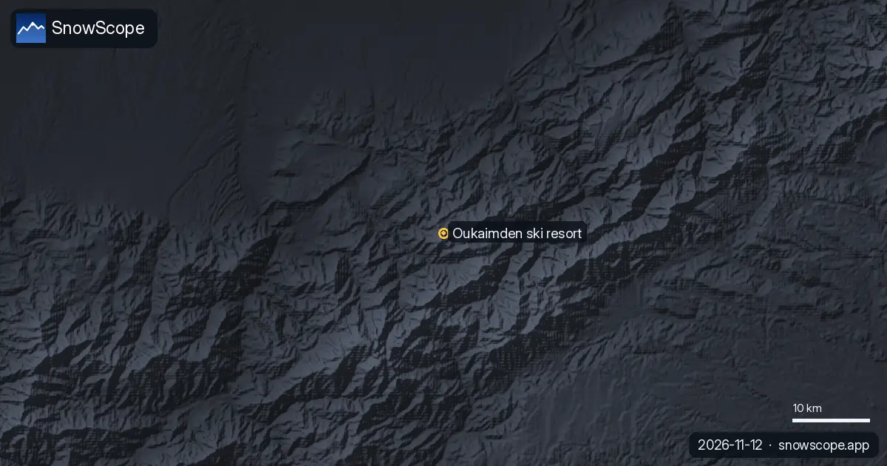
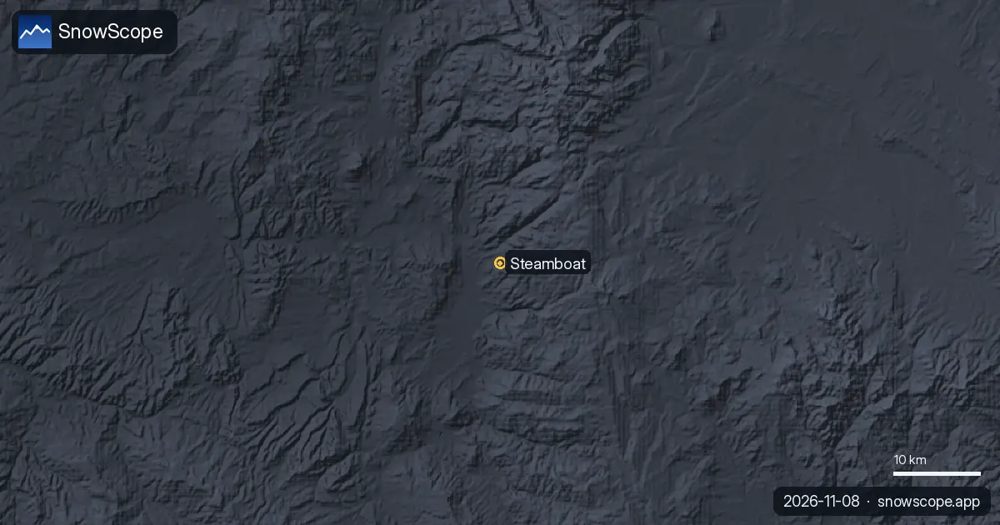
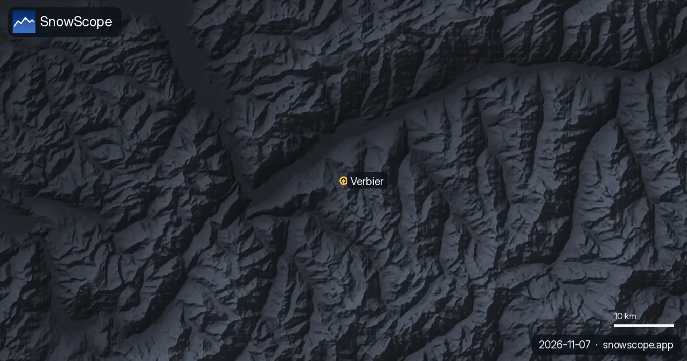
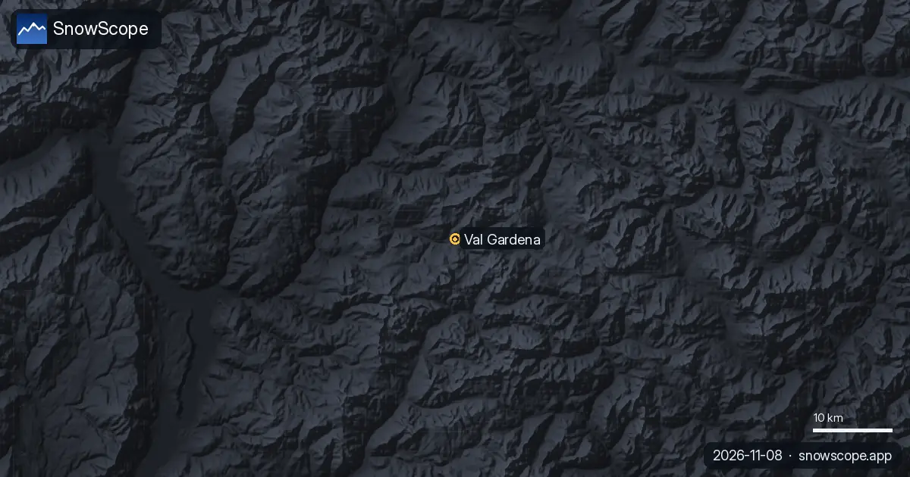
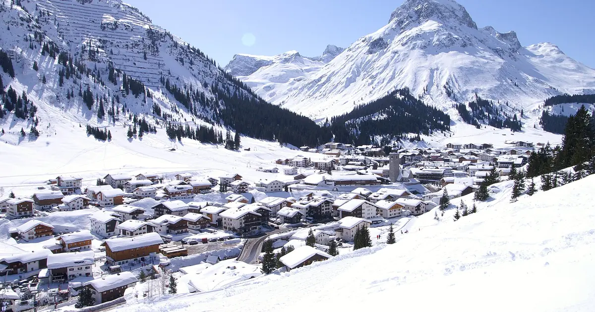
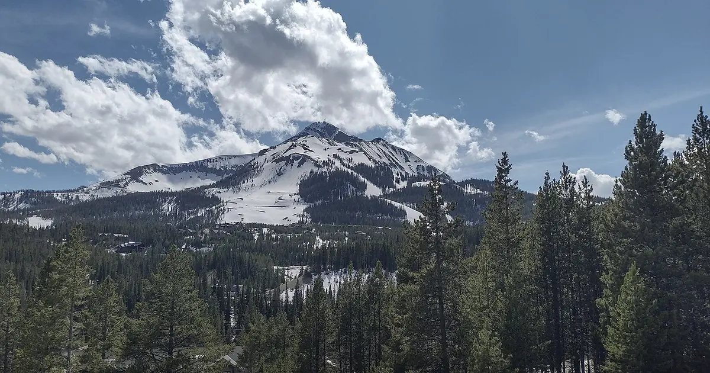
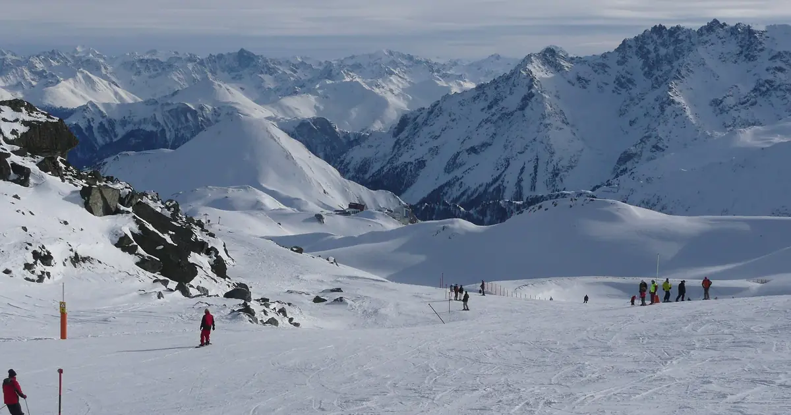

Bulletins neige · Guides
Des bulletins neige quotidiens pour les skieurs : où est la neige, ce qui arrive et où skier, d'après la carte de neige SnowScope et les stations de mesure. Chaque chiffre vient des données du jour.

Allemagne en décembre : la Zugspitze et le haut du Fellhorn avaient 30 cm mi-décembre dans au moins 9 hivers sur 10 ; Sudelfeld, Brauneck et le Feldberg rarement.

Puy-Saint-Vincent propose un forfait adulte 1 jour à 44 EUR avec une bonne neige en décembre en altitude, comparé ici à son grand voisin Serre Chevalier.

Sur nos 46 derniers hivers, Grand Targhee affichait toujours au moins 20 in (50 cm) à mi-pente le 15 décembre. Le billet journée en ligne coûte entre 125 $ et 180 $ selon la date.

Oppdal en décembre : 60 cm en bas (585 m) un 15 décembre typique, 93 % des hivers avec 30 cm à la mi-décembre, mieux que le bas de Trysil.

Grimentz-Zinal propose 71 km de pistes et un enneigement fiable en altitude pour votre voyage en décembre, avec des forfaits 6 jours à CHF 339,00.

Autriche avant Noël : Galtür 258 EUR et Kühtai 269 EUR les 6 jours, avec 30 cm dans plus de 90 % des hivers ; les glaciers coûtent plus, les petites stations sont un pari.

Vous prévoyez un voyage en décembre à Baqueira Beret ? Consultez notre historique d'enneigement, les prix des forfaits à partir de 70,00 € pour une journée, et comparez avec Astún-Candanchú.

Nous classons les stations de ski françaises selon les probabilités de neige en décembre et le prix des forfaits, à partir de 36,00 EUR pour un forfait journée adulte aux Karellis.

À Oukaïmeden, décembre donne 18 cm à mi-pente dans un mois typique, contre 44 cm en février et 53 cm en mars. Ce que 46 hivers disent du bon mois pour skier.


Galtür en décembre : 55 cm à mi-pente un 15 décembre typique, 93 % des hivers avec 30 cm à la mi-décembre ; journée basse saison 55,50 EUR jusqu'au 18 décembre.

Geilo en décembre : 57 cm à mi-pente un 15 décembre typique, 96 % des hivers avec 30 cm à la mi-décembre ; journée à partir de 590 NOK (environ 56 EUR).

Grandvalira est souvent vendue comme une destination pas chère en décembre, pourtant la neige naturelle à la base n'atteint en moyenne que 9 cm lors des hivers passés.

Hemsedal en décembre : 70 cm à mi-pente et 106 cm au sommet un 15 décembre typique, mais 32 cm en bas ; Geilo tout près à partir de 590 NOK la journée.

Glacier d'Hintertux en décembre : 98 cm à 3245 m et 52 cm à mi-pente un 15 décembre typique ; forfait journée 82 EUR, 6 jours 399 EUR.

Comparez les probabilités de neige en décembre et les tarifs vérifiés de forfaits dès 40,00 EUR dans les domaines skiables italiens pour votre week-end en voiture.

Skier à Kühtai en décembre : 60 cm au pied des pistes (1939 m) un 15 décembre typique, forfait 6 jours basse saison à 269 EUR jusqu'au 18 décembre.

Les 2 Alpes culmine à 3 511 m pour de la neige abondante en décembre 2026, avec un forfait adulte 6 jours à 266,50 EUR.

Les Karellis propose 45 km de pistes et un forfait adulte 6 jours à 191,00 EUR avec 98 % de chances d'avoir de la neige à mi-montagne fin décembre.

Levi en décembre : 38 cm un 15 décembre typique, 91 % des hivers avec 30 cm la semaine de Noël, et plus de neige qu'avant ; journée 60 EUR, 57 EUR en ligne.

Skiez à Livigno pour 51,50 EUR par jour avant le 18 décembre, quand la neige au sommet atteint 30 cm dans 100 % des hivers passés.

À Michlifen, 89 % des hivers n'ont presque pas de neige le 15 décembre (moins de 5 cm). Ce que 46 hivers disent du ski dans le Moyen Atlas en décembre.

Montgenèvre affiche 56 cm de neige habituelle en décembre à son pied de station, offrant aux skieurs du week-end une meilleure couverture précoce que Sestriere, de l'autre côté de la frontière.

Skier à Obertauern en décembre : 43 cm un 15 décembre typique à mi-pente, forfait 6 jours à 331 EUR avant Noël. Historique de neige et prix.

Oukaïmeden à la mi-décembre : 16 cm à mi-pente dans un hiver typique, 50 cm ou plus dans 11 % des hivers seulement. Date par date, ce que disent 46 hivers.

Oukaïmeden est à 50 km à vol d'oiseau de Marrakech. Comment réussir un week-end de ski en décembre : quand partir, quelles chances de neige, ce qu'on sait des prix.

Les 3 Vallées : 75,70 € le jour du 5 au 18 décembre 2026. Oukaïmeden : pas de tarif officiel en ligne, 16 cm à mi-pente mi-décembre. Le vrai comparatif.

Pila, au-dessus d'Aoste, combine un forfait journée fixe à 60,00 EUR et une neige fiable en décembre sur ses pistes d'altitude.

Les remontées de Saas-Fee atteignent 3 556 m, où notre historique montre que 100 % des hivers passés ont au moins 30 cm de neige à la mi-décembre.

12 stations nordiques en décembre : Hemavan, Hemsedal et Geilo avaient 30 cm à mi-pente mi-décembre dans 96 à 100 % des hivers ; journées finlandaises 58-60 EUR.

Chances de neige en décembre sur 46 hivers et prix journaliers vérifiés : Ski Cooper 49 $, Les 3 Vallées 75,70 €, Oukaïmeden sans tarif officiel. Là où une journée de ski pas chère en décembre fonctionne.

Découvrez les pistes tranquilles de St-Luc Chandolin, où la neige à mi-montagne atteint 30 cm dans 98 % des hivers fin décembre.

Trysil en décembre : 44 cm à mi-pente un 15 décembre typique, 83 % des hivers avec 30 cm à la mi-décembre ; les prix sont dynamiques, réservez tôt.

Valloire-Valmeinier propose 131 km de pistes et 98 % de chances d'avoir 30 cm de neige à mi-montagne mi-décembre.

Zugspitze en décembre : 122 cm à 2627 m un 15 décembre typique, journée adulte 70,50 EUR en ligne ; le Garmisch-Classic en dessous 69 EUR, avec bien moins de neige.

Mölltaler Gletscher en décembre : 66 cm en bas (2103 m) et 128 cm à mi-pente un 15 décembre typique ; forfait 6 jours basse saison à 332 EUR.

Le Mt. Baker en décembre : 46 in (116 cm) de neige à mi-montagne pour un 15 décembre type, et un forfait à 98,80 $ du lundi au jeudi, vendu uniquement sur place le jour même.

Un débutant prudent peut-il faire confiance à Courmayeur en décembre, alors que la moyenne à mi-montagne est de 60 cm de neige sur nos hivers passés ?

Åre en décembre : 40 cm à mi-pente un 15 décembre typique, 89 % des hivers avec 30 cm à la mi-décembre, mais une forte baisse au sommet depuis les années 1980.

Conditions de ski à Deer Valley le 13 novembre 2026 : pas encore de vraie neige au sol, environ 4 in près du sommet avec la tempête du week-end, pluie côté East Village sous environ 6,700 à 7,600 ft, et 11 in en haut sur la semaine.

Prévision de neige à Park City (Utah) le 13 novembre 2026 : presque pas de neige au sol pour l'instant, environ 5 in près du sommet avec la tempête du week-end et une limite pluie-neige de 7,400 à 7,700 ft, pluie en bas, et environ 12 in en haut sur la semaine.

Prévisions de neige à Alpental le 13 novembre 2026 : environ 1 in sur le haut de la montagne, pluie presque jusqu'au sommet ce week-end avec une limite vers 5,400 à 5,600 ft, puis 4 à 5 in de pluie et neige mêlées en haut la semaine prochaine.

Point neige à Bogus Basin pour les skieurs de Boise le 13 novembre 2026 : pas encore de neige au sol, pluie et neige mouillée ce week-end avec une limite vers 6,300 à 6,800 ft, puis de l'air plus froid et environ 8 in au sommet d'ici la semaine prochaine.

Le plan des pistes de Sillian (Hochpustertal) avec notre couche de neige le 13 novembre 2026 : 8,6 cm au sommet à 2399 m, bas des pentes à nu, et une semaine de pluie et neige mêlées avec une limite vers 1 800 à 2 000 m.

Conditions de neige à Silvretta Montafon le 13 novembre 2026 : 4,5 cm au sommet à 2421 m, mi-pente et vallée à nu, environ 40 cm attendus en altitude cette semaine, pluie dans la vallée sous 1 500 m.

Bulletin neige de Lech Zürs du 13 novembre 2026 : environ 6 cm au sommet (2436 m) et à mi-pente, rien à Lech à 1430 m. Cette semaine 42 cm en haut selon notre prévision, jusqu'à 91 cm selon d'autres, pluie et neige mêlées vers 1400 m. Et pourquoi Lech est le côté enneigé de l'Arlberg.

Hauteur de neige à St. Anton am Arlberg le 13 novembre 2026 : environ 1 cm au sommet (2642 m), 5 cm à mi-pente, rien au village. Cette semaine 42 cm au sommet et 33 cm à mi-pente, pluie sous 1480 m environ. Combien de neige il faut pour les pentes raides.

Bulletin neige d'Obergurgl du 13 novembre 2026 : environ 20 cm au sommet (3024 m), 5 cm à mi-pente, rien aux remontées du bas (1784 m). Prévisions de la semaine : 34 cm en haut, 21 cm en bas, limite pluie-neige vers 1700 m. Et le début de saison habituel.

Hauteur de neige à Sölden le 13 novembre 2026 : environ 9 cm au sommet (3245 m), 5 cm à mi-pente, rien dans la vallée à 1346 m. 25 cm prévus en haut cette semaine, pluie sous 1620 m environ. Glacier contre village, avec 46 hivers passés.

Chutes de neige à Val Thorens, 13 novembre 2026 : 27 cm tombés au sommet (3175 m) et 17 cm à 2498 m en sept jours ; hauteur de neige de 50 cm et 8 cm. Sept prochains jours : 86 cm au sommet, 73 cm à 2498 m, limite pluie-neige bien sous le village. La saison habituelle sur 46 hivers.

La hauteur de neige à Chamonix le 13 novembre 2026, altitude par altitude : rien au fond de la vallée, 1 cm à 2001 m, 12 cm en haut de Brévent-Flégère (2486 m), 5 à 24 cm en haut des Grands Montets (2768 m). Environ un mètre prévu en altitude cette semaine, de la pluie dans la vallée. L'épaisseur habituelle sur 46 hivers.

Hauteur de neige à Ischgl le 13 novembre 2026 : environ 5 cm au sommet (2868 m), 4 cm à mi-pente, rien dans la vallée à 1352 m. Jusqu'à 42 cm sur la crête cette semaine, pluie dans le Paznaun sous 1570 m environ. Et la vallée face à la crête sur 46 hivers.

Bulletin neige des Menuires du 13 novembre 2026 : 28 cm au sommet (2838 m), rien au sol à 2112 m ni à 1386 m. Environ 80 cm attendus au sommet en sept jours, limite pluie-neige vers 1500 à 1700 m. Pourquoi Val Thorens, 450 m plus haut dans la même vallée, en a déjà plus.

Les conditions de neige à Tignes le 13 novembre 2026 : 42 cm au sommet (3447 m), 12 cm à 2503 m, une vallée sans neige à 1559 m, et 99 cm prévus au sommet sur sept jours, avec de la pluie sous 1700 m environ. La comparaison avec 46 hivers passés.

Le bulletin ski de Purgatory Resort (Durango, Colorado) selon notre modèle de neige : 3 in (7 cm) au sommet, bas et mi-pente sans neige, 4 à 7 in de neige fraîche prévus dans les sept prochains jours, et à quoi ressemble un hiver habituel à Purgatory.

Les conditions de neige à La Rosière sur notre calcul du 11 novembre : 24 cm au sommet (2799 m), mi-pente et village sans neige, et une prévision à sept jours de 108 cm au sommet et 61 cm à mi-pente. Le versant ensoleillé du Petit-Saint-Bernard en chiffres.

La neige à l'Alpe Devero (Ossola, Piémont) selon notre modèle : 2 cm au sommet (2201 m), rien en dessous, 36 cm de neige fraîche prévus au sommet dans les sept prochains jours. La petite station sans voitures et son hiver habituel en chiffres.

Le bulletin neige des Arcs selon notre modèle : 34 cm au sommet (3205 m), 2 cm à mi-pente, un bas sans neige, et jusqu'à 69 cm de neige fraîche prévus au sommet dans les sept prochains jours. Ce que Les Arcs ont d'habitude en novembre et en décembre.

Les conditions de neige à Méribel selon notre modèle du 11 novembre : 24 cm au sommet (2920 m), 1 cm à mi-pente, une vallée sans neige, et une prévision de 99 cm au sommet et 58 cm à mi-pente sur les sept prochains jours. L'hiver habituel de Méribel en chiffres.

Le plan des pistes d'Isola 2000 avec la neige du jour : 9 cm au sommet, 7 cm à mi-pente, 2 cm en bas après 31 cm en une semaine, comment s'organisent les secteurs Pelevos, Saint-Sauveur et Lombarde, et ce qu'apporte un hiver habituel.

Pas encore de neige à Oukaïmeden : 0 cm aux trois altitudes, rien ces sept derniers jours, rien dans la semaine à venir. Ce que donne un novembre habituel dans le Haut Atlas et quand viser le ski.


Nous avons comparé la neige du 10 novembre avec la neige la plus épaisse de chaque hiver, dans 46 stations de ski et sur 46 hivers. Un début enneigé aide, mais moins que beaucoup de skieurs ne le pensent.

Une tempête le 4 novembre a laissé 8 à 13 inches de neige fraîche sur cinq stations d'altitude du Colorado, près d'Aspen. Cinq jours plus tard, la moitié avait disparu. Ce que cela veut dire pour vos journées de poudreuse.

Combien de temps les Pyrénées sont restées blanches chaque hiver depuis 2000-01, vu par satellite, et la hauteur de neige à 10 stations aux longues séries. Trois hivers maigres d'affilée ont pris fin en 2025-26 ; cet automne a commencé normalement.

Une carte des pentes des Grands Montets et de sept autres domaines skiables montre quelle part du terrain dépasse 30°, 35° et 40°, et pourquoi ce seuil compte pour les avalanches.

Sur 46 hivers, les stations du versant italien et des Alpes du Sud françaises ont connu 24 fois un hiver relativement plus généreux que le versant nord. Le graphique, les grandes années et la météo qui les explique.

En décembre, la neige dépend d'abord de l'altitude. 46 hivers passés dans 676 stations des Alpes montrent combien de neige attendre le 1er, le 15 et le 22 décembre, de moins de 1 200 m à plus de 2 400 m.

Whistler Blackcomb a reçu 75 cm de neige nouvelle au sommet en une semaine, puis une tempête douce avec 124 mm d'eau. Un guide simple sur la sous-couche, la neige fraîche, la pluie et la croûte.

Un séjour de 3 jours pas cher au lac de Côme en décembre, avec les vrais prix 2026-27 : trains, bateaux, funiculaire et ski à Piani di Bobbio ou Madesimo, l'économie par rapport à Cortina et les chances de neige à Noël.

La neige du jour à Livigno, ce que la prévision saisonnière européenne annonce pour décembre, et pourquoi l'altitude l'emporte sur un mois doux à Noël.

La neige du jour à Cortina, la prévision saisonnière européenne pour décembre et nos chances d'un Noël blanc dans l'est des Dolomites.

Où décembre 2026 s'annonce plus ou moins enneigé dans les Dolomites, du Val Gardena à Cortina : la prévision saisonnière européenne, notre carte et les chances d'un Noël blanc.

Combien d'eau la neige de l'Atlas pourrait garder en février 2027 : la prévision saisonnière européenne est environ 3 °C plus douce et plus humide à l'ouest et au sud, et les chances de neige restent faibles sur les bassins du Maroc.

La prévision saisonnière européenne rend janvier 2027 environ 2 °C plus doux sur l'Atlas. Notre tendance pour la hauteur de neige, l'eau de la neige et l'eau stockée pour les rivières du Maroc.

Le Bou Iblane est encore nu. La prévision saisonnière européenne annonce un décembre nettement plus doux, et sur tout le Moyen Atlas enneigé nos chances penchent vers moins de neige.

Où décembre 2026 s'annonce plus ou moins enneigé du Montana au Nouveau-Mexique : la prévision saisonnière européenne et notre carte, massif par massif, avec le Colorado, l'Utah et les Rocheuses du Nord.

Le manteau neigeux des Écrins aux Alpes-Maritimes et au Piémont va-t-il se remplir comme d'habitude en décembre 2026 ? La prévision saisonnière européenne et notre carte, massif par massif.

Pas encore de neige à l'Oukaïmeden. La prévision saisonnière européenne voit un décembre plus doux sur le Haut Atlas, et notre carte montre des chances plus faibles sur presque tous les sommets.

La neige du jour aux Grands Montets, la prévision saisonnière européenne pour décembre et notre carte des secteurs plus ou moins enneigés autour du Mont-Blanc.

Vail en chiffres : un pic habituel d'environ 64 in (162 cm) à mi-pente sur 46 hivers passés, mars le mois le plus enneigé, plus domaine, accès et sécurité.

Zermatt en chiffres : où la neige tient, les mois les plus sûrs et comment rejoindre le village sans voitures, d'après 46 hivers passés.

Steamboat, Colorado, en famille : ce qui convient aux tout-petits, aux enfants, aux ados et aux parents, avec la neige de 46 hivers passés à trois altitudes.

Verbier est-il fait pour les débutants ? Quand la neige est-elle la meilleure ? Comment y aller ? Réponses sur les 4 Vallées et 46 hivers passés.

Comment passer un premier jour à Park City Mountain, Utah, et quand y aller : notre historique donne environ 71 in (180 cm) au pic habituel à mi-pente sur 46 hivers passés.

Une image, 100 massifs dans les Alpes, les Pyrénées, l'Atlas et en Amérique du Nord : le Canada mène avec 89 % d'enneigement, les Alpes atteignent 45 %, l'Atlas et le nord-est des États-Unis sont encore secs.

Le Sella Ronda depuis Sëlva dans le Val Gardena : cols de Gardena, Campolongo, Pordoi et Sella dans l'ordre, avec notre historique de neige de 46 hivers passés.

Mt Baker, État de Washington : environ 133 in (337 cm) au pic habituel à mi-pente sur 46 hivers passés, un record mondial de neige, aucun hébergement sur place.

Val d'Isère et l'Espace Killy pour débutants, skieurs moyens et experts, avec la neige de 46 hivers passés à trois altitudes.

Préparez Mammoth Mountain selon la saison : environ 93 in (235 cm) au pic habituel à mi-pente sur 46 hivers passés, mars le plus enneigé, longs printemps, hivers variables.

Kitzbühel est célèbre et basse. Ce que disent 46 hivers passés de la neige à 762 m, 1 377 m et 1 993 m, ce qui a changé, et quelles semaines sont le pari le plus sûr.

Les idées reçues sur Jackson Hole face aux faits et à notre historique : environ 80 in (204 cm) au pic habituel à mi-pente sur 46 hivers passés, sans baisse nette.
Nous avons comparé la carte de hauteur de neige SnowScope à 2 012 stations de mesure : RMSE 7,7 cm, biais -0,5 cm, neige ou pas de neige juste 88 % du temps. Ce qui marche, ce qui ne marche pas encore, et la suite.

Dix points pratiques pour un séjour de ski à Livigno : les routes, le froid, les boutiques détaxées, les deux versants et le meilleur moment pour la neige, d'après 46 hivers passés.

Rejoindre Telluride en hiver, aéroport par aéroport : Telluride Regional, Montrose, la route 145 avec la loi de traction du Colorado, et la télécabine gratuite vers Mountain Village.

Comment se déroule d'habitude une journée de neige à Whitewater, près de Nelson, de la météo du matin à la dernière descente, avec la neige de 46 hivers passés à trois altitudes.

Arc 1600, 1800, 1950 et 2000 comparés pour la neige, les pistes et l'accès, avec 46 hivers passés de notre historique de neige à trois altitudes des Arcs.

Aller à Snowbird en hiver : une seule route (SR-210), la loi sur l'équipement de l'Utah, le bus de ski UTA et le trajet depuis l'aéroport.

Whistler Blackcomb pour tous les niveaux, avec notre historique : environ 370 cm au pic habituel à mi-pente sur 46 hivers passés, mars et avril les plus enneigés.

Des paysans walser au Weißer Ring : les dates qui ont fait Lech Zürs, puis notre historique de neige hier et aujourd'hui, les quinze premiers de 46 hivers passés contre les quinze derniers.

Vers Palisades Tahoe en hiver : distances depuis Reno, chaînes obligatoires R-1 à R-3, parking réservé le week-end, bus TART gratuits.

Une liste pratique pour Stowe, Vermont : couches, protection du visage, masque, carres affûtées et chaufferettes, reliée à la neige de 46 hivers passés sur le Mount Mansfield.

Skier à Lake Louise en début de saison : pourquoi la station démarre tôt, à quoi ressemble d'habitude la neige de novembre et décembre sur 46 hivers passés, et comment skier une neige encore mince.

Ce qui est vrai à La Grave, la montagne hors-piste sous la Meije : terrain, sécurité, neige par mois et tendance, d'après 46 hivers passés.

Big Sky, Montana, facile à se représenter : 5 850 acres sous le Lone Peak, et une neige environ cinq fois plus épaisse près du sommet qu'en bas sur 46 hivers passés.

L'Andorre n'a pas de grand aéroport : rejoindre Grandvalira depuis Barcelone ou Toulouse, le tunnel d'Envalira, la route CG2 et les parkings.

Magic Mountain à Londonderry, Vermont : une petite station indépendante avec des sous-bois raides, un vieux télésiège rouge et peu de neige naturelle. Cinq choses à savoir, avec la neige de 46 hivers passés.

Skiez d'abord en pensée tout le dénivelé de Revelstoke : la neige au sommet, à mi-pente et en bas dans la vallée sur 46 hivers passés, et quand chaque partie est au mieux.

Sept jours dans la Silvretta Arena, un par un : où est la neige, quand passer à Samnaun, et ce que disent 46 hivers passés de la neige d'Ischgl à trois altitudes.

Aspen Snowmass comparé : Snowmass a environ 75 in (190 cm) au pic habituel à mi-pente sur 46 hivers passés, Aspen Mountain environ 69 in (174 cm). Terrain, accès, sécurité.

Gourette et Cauterets côte à côte : altitudes, neige habituelle par mois, meilleures semaines et accès, d'après 46 hivers passés.

Mad River Glen, Vermont : neige naturelle, environ 30 in (75 cm) au pic habituel à mi-pente sur 46 hivers passés, février le plus enneigé. Trois façons de prévoir sa journée.

Banff Sunshine Village mois par mois : environ 100 cm à mi-pente en mars d'un hiver habituel sur 46 hivers passés, avril le plus enneigé en haut, saison jusqu'à fin mai.

Saas-Fee est sans voitures : le train jusqu'à Viège et le CarPostal 511, la route de la vallée du Rhône et les trains autos, les parkings et bus gratuits.

Environ 109 in (276 cm) : c'est le pic habituel d'Alta à mi-pente sur 46 hivers passés. Ici : pourquoi le snowboard reste à la maison, les meilleurs mois et comment monter le canyon.

L'Alpe d'Huez fait face au soleil. Comment organiser sa journée selon l'heure et l'altitude, avec la neige de 46 hivers passés, des villages bas au Pic Blanc.

Notre série de 46 hivers dans les Alpes, 108 points de 667 à 3 872 m : moins de jours de neige partout, nettement à 81 %. Ce qui a changé et pourquoi.
À l'altitude d'Oukaïmeden, notre série de 46 hivers montre 12 % de jours de neige en moins ; plus bas, le signal se perd. Ce que l'on sait.

Baqueira-Beret est dans le Val d'Aran, côté atlantique des Pyrénées. Ce que cela change pour sa neige, vérifié sur 46 hivers passés face à La Molina, et quand y aller.

Portrait de Bonneval-sur-Arc en Haute-Maurienne : toits de lauze, un col fermé, un petit domaine et une neige étonnamment épaisse, d'après 46 hivers passés de notre historique.